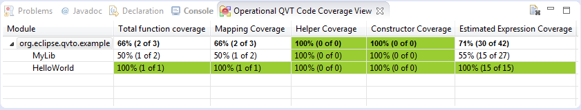

A screenshot of the Operational QVT Code Coverage View is given in the figure below.

The view is created and gains focus once execution of a JUnit test suite is completed. The left column of the coverage view shows a hierarchical view of transformations that were invoked during the test run, with project on top and the transformation modules and library units within the project underneath, in this case only the Hello World module. The remaining columns show the coverage criteria per QVTo language construct used within the unit. Each cell contains the achieved coverage percentage of the corresponding coverage criteria, as well as the absolute values that were used to calculate it.
The coverage view cells are colored according to the percentage calculated for that criterion; high coverage (green), medium coverage (white) and low coverage (red). The two thressholds required to categorize the coverage value can be configured in the workspace preferences, see Windows->Preferences->Operational QVT Code Coverage. By default, the high coverage thresshold is set to 90%, the low coverage thresshold is set to 30%.
Easy navigation to the transformation module or library unit is offered by double clicking on it when listed in the view. The module or libary is opened in the associated editor. An example is shown in the figure below.
The toolbar of the Operational QVT Code Coverage View contains a button to clear the coverage data collected during previous runs. By pressing the button, the view as well as the markers that were set on instrumented transformation modules are cleared.